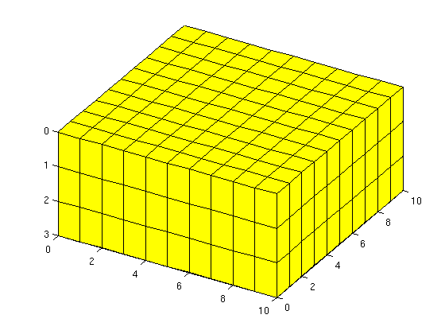
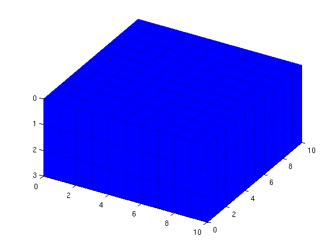
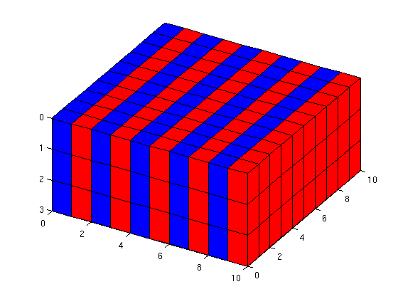
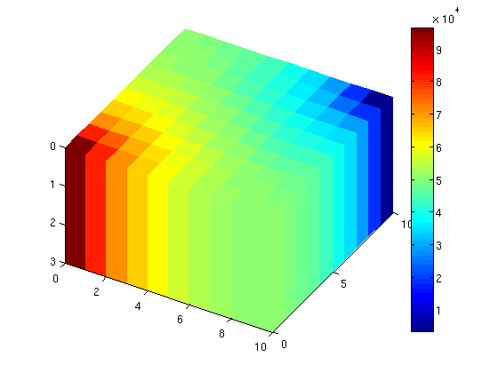
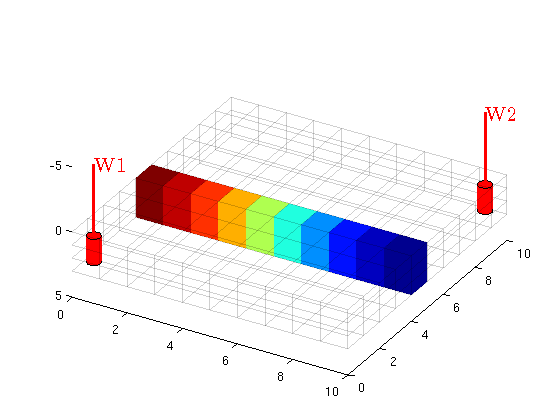
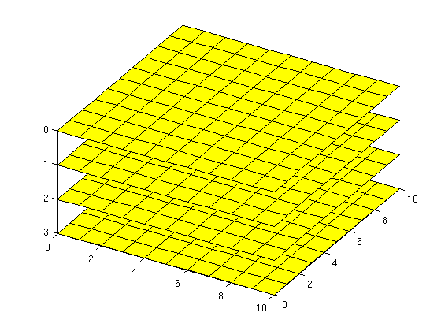
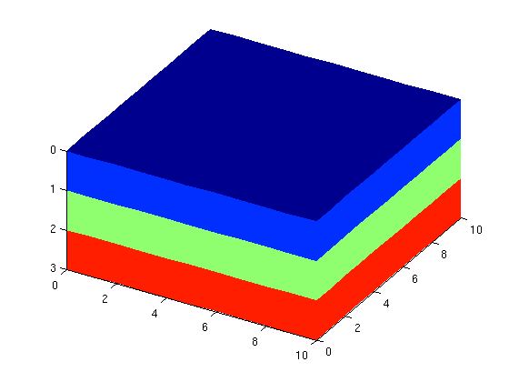
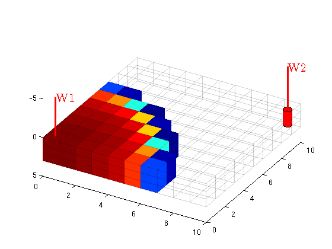
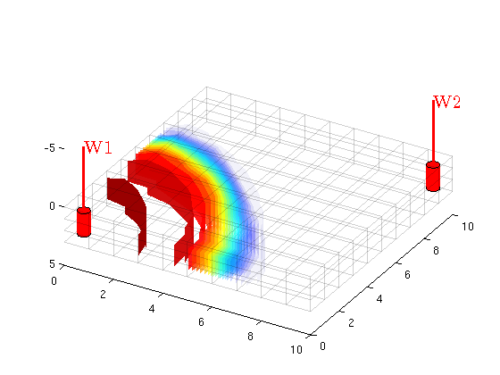

Visualizing in MRST
MRST contains a suite of visualization routines which make it easy to create visualizations of grids and results. This tutorial show how to visualize grids, subsets of grids and details the different routines included in MRST.
Contents
We define a simple two phase example
The following is only meant as an example for the visualization and will not be covered thourougly. Create a simple 3D Cartesian grid
G = cartGrid([10, 10, 3]); G = computeGeometry(G); % Disable gravity gravity off % Set up uniform permeability and constant porosity rock.perm = repmat(100*milli*darcy, [G.cells.num, 1]); rock.poro = repmat(0.5 , [G.cells.num, 1]); % A simple two phase system. fluid = initSimpleFluid('mu' , [ 1, 10]*centi*poise , ... 'rho', [1014, 859]*kilogram/meter^3, ... 'n' , [ 2, 2]); % Two wells, an injector at 1 bar and a producer at 0 bar. W = verticalWell([], G, rock, 1, 1, [], ... 'Type', 'bhp' , 'Val', 1*barsa(), ... 'Radius', 0.1, 'InnerProduct', 'ip_tpf', ... 'Comp_i', [0, 1]); W = verticalWell(W, G, rock, 10, 10, [], ... 'Type', 'bhp' , 'Val', 0*barsa(), ... 'Radius', 0.1, 'InnerProduct', 'ip_tpf', ... 'Comp_i', [1, 0]); % Create a initialized state and set initial saturation to phase 1. sol = initState(G, [], 0, [1, 0]); % Find transmissibility. T = computeTrans(G, rock); % Reference TPFA psolve = @(state) incompTPFA(state, G, T, fluid, 'wells', W); % Implicit transport solver tsolve = @(state, dT) implicitTransport(state, G, dT, rock, ... fluid, 'wells', W);
PlotGrid
PlotGrid is an essential part of MRST's visualization routines. It simply draws a grid to a figure with a reversed z axis.
clf; plotGrid(G) view(30,50)
MRST and patch
All grid plotting routines are based on MATLAB's patch routine which enables plotting of general polygons. Any keyword arguments will be passed on to patch, which makes it possible to alter many attributes. For instance, we can replot the grid with partially transparent edges and faces in another color:
clf; plotGrid(G, 'EdgeAlpha', 0.1, 'FaceColor', 'blue') view(30,50)
plotGrid and subsets
plotGrid's second argument corresonds to a list of cells to be plotted. This can be either logical indices (a logical vector of length G.cells.num will plot Cell i if the ith element of the vector is true) or an explicit list of indices, i.e. the cell numbers to be plotted. To demonstrate this, we will plot all indices with equal values in a different color. Note that the plotting routines do not reset the figure between plots, making it easy to create compositions of different plots.
clf; equal_index = mod(1:G.cells.num,2) == 0; plotGrid(G, equal_index, 'FaceColor', 'red') plotGrid(G, ~equal_index, 'FaceColor', 'blue') view(30,50)
plotCellData
Generally seeing only the grid is not that interesting. If we want to show actual values, we need to use plotCellData. Let us solve the reservoir pressure and plot it:
sol= psolve(sol); clf; plotCellData(G, sol.pressure) colorbar view(30,50)
plotCellData with subsets and plotWell
plotCellData is closely related to plotGrid. We can observe that the pressure has its largest values in the wells, which makes it seem that the pressure is almost homogeneous inside the domain. Let us then plot pressure values for the middle of the domain. We also plot an empty grid to see where we are actually plotting.
[i j k] = ind2sub(G.cartDims, 1:G.cells.num); clf; plotGrid(G, 'FaceAlpha', 0, 'EdgeAlpha', .1) plotCellData(G, sol.pressure, j == round(G.cartDims(2)/2)) % Plot the wells plotWell(G, W); view(30,50)
plotFaces
Some data is given at a per face basis instead of cells. For this purpose we have plotFaces and plotFaceData which are analogous to plotGrid and plotCellData respectively.
% Plot Faces with positive normals in z direction
clf;
plotFaces(G, find(G.faces.normals(:,3)>0));
view(30,50);
 plotFaceData
plotFaceData lets us plot face values, for instance when dealing with fluxes and faults. For an example, let us plot the faces colored by the z values of the face centroids.
clf; plotFaceData(G, G.faces.centroids(:,3)); view(30,50);
Animated example
We will now simulate a simple transport problem between the wells. We will plot the empty grid and the wells, and in each time step we will visualize the saturation in the cells where the inejcted phase is above a threshold, here 0.05.
% We first solve the problem dT = 10*day; solutions = cell(20,1); for i = 1:20 sol = tsolve(sol, dT); sol = psolve(sol); solutions{i} = sol; end % Then plot for i = 1:20 clf; sol = solutions{i}; plotCellData(G, sol.s(:,2), sol.s(:,2)>0.05) plotGrid(G, 'FaceAlpha', 0, 'EdgeAlpha', .1) plotWell(G, W); view(30,50); pause(.5) end
Alternatively, use plotGridVolumes for the same purpose
plotGridVolumes is an alternative to plotCellData. While more computationally intensive, it plots interpolated surfaces corresponding to specific values of the saturation, giving a better indication of the saturation front and a less clear indication of the saturation mixture in sationary areas. These functions can be combined depending on the nature of the data set.
for i = 1:20 clf; sol = solutions{i}; plotGridVolumes(G, sol.s(:,2), 'basealpha', 2) plotGrid(G, 'FaceAlpha', 0, 'EdgeAlpha', .1); plotWell(G, W); view(30,50); pause(.5) end